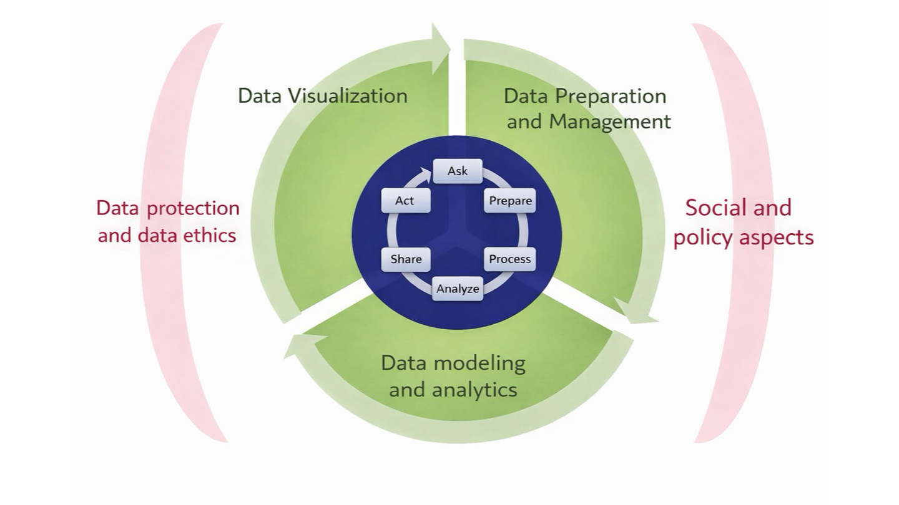
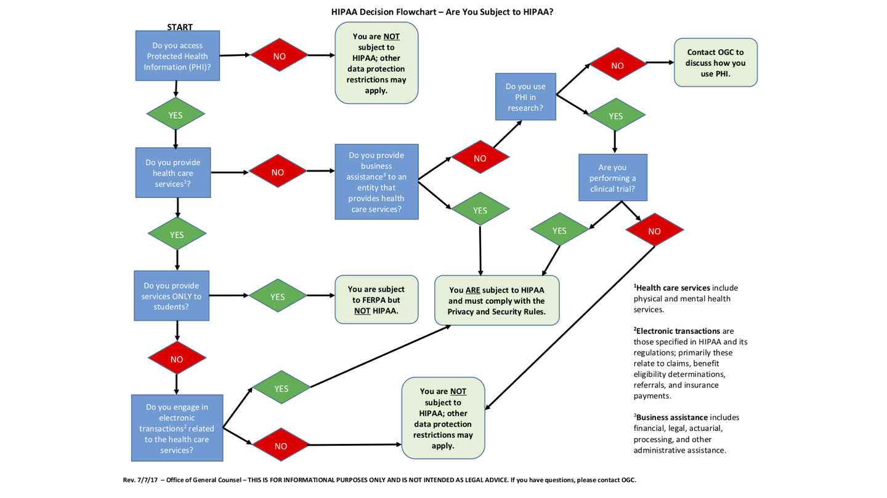
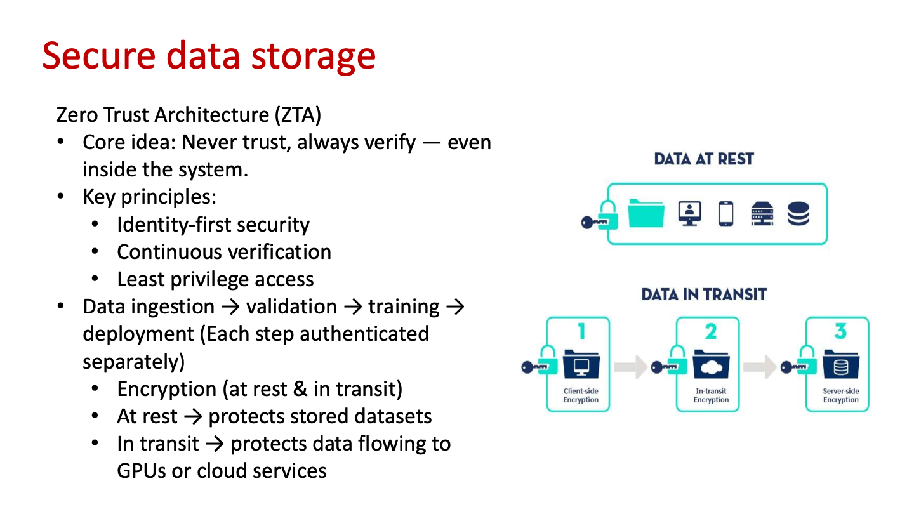
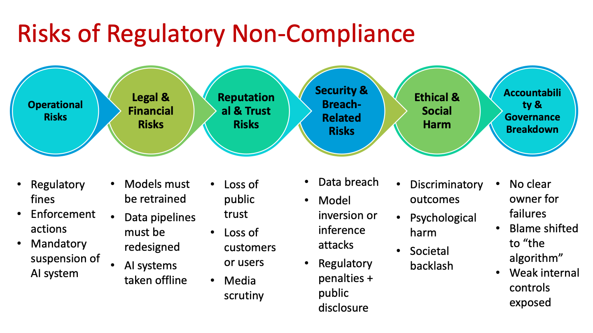
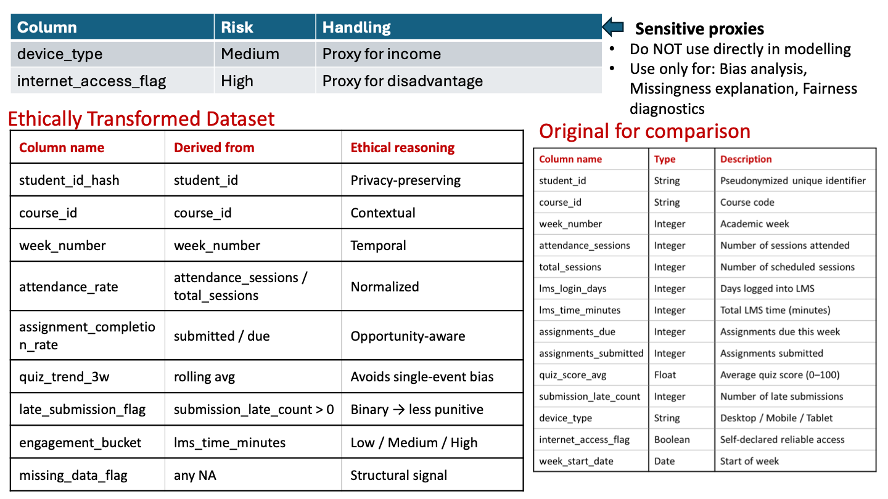

第五周：数据治理与负责任 AI
前四周讲怎么把数据处理好，本周讲谁可以用数据、能用来做什么、出了事谁负责。三份课件：数据治理原则与法律框架、负责任 AI 与安全存储、一条从提取到建模的伦理流水线。另有一篇阅读材料讲数据科学的四大支柱。
What is Data Governance?｜数据治理管什么
本章图表 / 方法：五个维度（治理课件第 2 页）；数据生命周期与治理关系图（第 3 页）；六个目标（第 4 页）；为什么需要治理、为什么更难（第 5–6 页）。
定义：数据治理是由政策、流程、角色、控制措施和技术组成的框架，保证数据在整个 AI 生命周期里满足下面五点。
| 维度 | 要回答的问题 |
|---|---|
| Legally compliant 合法 | 收集合法吗？这个用途允许处理吗？允许跨境传输吗？ |
| Ethically used 合伦理 | 合法也要问公平吗、会不会伤害弱势群体。课件原话：Legal ≠ ethical ≠ acceptable。 |
| Secure 安全 | 谁能访问原始数据？怎么保护？泄露能否被发现和追踪？ |
| Traceable 可追溯 | 数据从哪来、做过哪些转换、哪个版本训练了哪个模型？ |
| Accountable 可问责 | AI 造成伤害时，是开发者、数据提供方还是组织负责？治理要事先分配好失败的责任，而不只是分功劳。 |


六个目标
- 避免各部门各自为政形成数据孤岛（data silos）。
- 统一数据定义，大家对同一个字段的理解一致。
- 发现并修复错误，提升数据质量。
- 让分析更准确，给决策者可靠的信息。
- 制定并执行政策，防止数据错误和滥用。
- 确保符合隐私法规。
为什么 AI 时代的治理更难
| 传统软件 | 数据科学 / AI | |
|---|---|---|
| 行为来源 | 代码，结果确定 | 数据 → 模型 → 行为，结果是概率性的 |
| 错误 | bug 看得见、能修 | 可能看不见、有偏、违法、伤人，而且常在部署后才发现 |
- Data is reused：同一份数据被多个模型、多个目的使用，原来的同意不一定覆盖新用途。
- Models encode data permanently：原始数据删了，模型可能还记得学到的信息。
- Harm is indirect：伤害出现在信贷、招聘、医疗、教育中，是统计意义上的，不针对某一个人。
课件结论：治理是约束 AI 能学什么、能做什么的控制系统。治理失败通常是被社会发现的，而不是被技术发现的。
Core Principles & Roles｜核心原则与三种角色
本章图表 / 方法：六条核心原则（治理课件第 7–8 页）；data steward 在生命周期各阶段的职责表（第 9 页）。
| 原则 | 要点 | 课件例子 / 判断方法 |
|---|---|---|
| 1. Lawfulness & legitimacy | 收集和处理有合法依据 | |
| 2. Accountability | 每个环节有人负责 | “The algorithm decided” 不是可接受的答案 |
| 3. Security & protection | 防止未授权访问和泄露 | |
| 4a. Purpose limitation | 只用于事先明确的目的，不能悄悄挪作他用 | 出勤数据 → 学业支持 ✓；拿去预测心理健康 ✗（需要新同意） |
| 4b. Data minimization | 只收集相关、相称、必要的数据 | ML 喜欢多特征，治理要求克制；多收会增加法律、伦理和安全风险，却不保证模型更好 |
| 5. Consent management | 通俗语言告知；可撤回；记录可审计 | Consent 是动态的，不是一次性勾选 |
| 6. Ownership, quality & integrity | 准确、一致、完整、可追溯 | 质量差 → 模型有偏 → 结果歧视 → 法律风险 |
易错：purpose limitation 管的是“拿去干什么”，data minimization 管的是“收多少”。题目说“同一份数据用于新目的”，选 purpose limitation；说“收集了用不上的字段”，选 data minimization。
Owner、Steward、Custodian
| 角色 | 负责什么 | 类比 |
|---|---|---|
| Data owner | 法律责任（legal accountability） | 房东：出事最终担责 |
| Data steward | 运营层面的质量和访问控制：数据定义、metadata、日常治理执行；连接业务、法律、技术三方 | 物业管家：天天管规矩 |
| Data custodian | 基础设施和存储 | 仓库保管员：只管放数据的地方 |
| 生命周期阶段 | Data steward 做什么 |
|---|---|
| Data collection | 核实 consent 和数据定义 |
| Data labeling | 保证标注一致、公平 |
| Feature engineering | 标出敏感特征和代理特征 |
| Model training | 确认数据使用合法 |
| Deployment | 核实推理时的数据合规 |
| Monitoring | 发现漂移和滥用 |
课件强调这些原则不是互相独立的，要一起起作用。
Why it matters & a Good Program｜没有治理会怎样
本章图表 / 方法：缺乏治理的后果与治理的好处（治理课件第 10 页）；好的治理项目包含什么（第 11 页）。
| 没有治理 | 有治理 |
|---|---|
| 决策延误、业绩下滑、安全漏洞、数据质量差、流程低效、合规风险 | 效率更高、数据质量更好、决策更好、业绩提升、声誉更好 |
| 部门之间无法有效沟通协调 | 统一定义、统一标准 |
| 客户数据不准确或不完整，客户关系变差 |
谁来推动：治理过去被当成 IT 问题，但 IT 部门没有权力统一并执行数据标准，所以应由业务管理层推动。典型做法是成立由高管和 data owner 组成的 steering committee（指导委员会）来制定政策。
好的治理项目包括：明确的争议解决流程；业务流程的详细文档；定期的数据质量审计；列出数据相关业务风险的 risk register；关键业务领域的数据模型；限制敏感或关键数据访问的政策。
Legal Frameworks｜GDPR、PDPA、HIPAA
本章图表 / 方法：三大法规对比表（治理课件第 13 页）；HIPAA 适用判断流程图（第 14 页）；新加坡各行业适用框架（第 15 页）；新加坡教育研究的治理要求（第 16 页）。
| 维度 | GDPR（欧盟） | PDPA（新加坡） | HIPAA（美国医疗） |
|---|---|---|---|
| 保护对象 | 欧盟境内可识别的个人 | 在新加坡被机构收集数据的个人 | 患者的受保护健康信息（PHI） |
| 治理重点 | 权利、问责、透明 | 同意、目的限制、保护 | 隐私、访问控制、安全 |
| Consent | 明示或有正当理由 | 核心要求 | 需要，有例外 |
| Data minimization | 强制 | 隐含 | 间接 |
| 敏感数据类别 | Special category data | Sensitive personal data | PHI |
| 审计与文档 | 强制 | 问责所需 | 强制 |
| 跨境传输 | 严格监管 | 有保障措施即可 | 受限 |
| 罚则 | 最高全球营收 4% | 高额罚款 | 民事 + 刑事处罚 |
| 典型 AI 风险场景 | 自动信贷、招聘系统 | 学生 / 客户分析 | 临床预测模型 |
课件勘误：表中 GDPR 的 Right to opt-out 写成 “Limited”，HIPAA 的数据最小化写成 “Indirect”。实际上 GDPR 有较强的反对权和删除权，HIPAA 有 “minimum necessary” 标准。考试按课件答。


新加坡：哪个行业适用什么
| 行业 / 活动 | 适用框架 |
|---|---|
| 零售电商、餐饮酒店、教育机构（教学和行政）、AI / 科技公司 | PDPA |
| 银行、保险、金融服务 | PDPA + MAS（金融管理局）规定 |
| 教育研究（问卷、行为日志、实验） | PDPA + IRB / ERC 伦理审查 |
| 医疗器械公司 | PDPA + 医疗指南 |
| 医学研究（临床试验、基因数据） | PDPA + 伦理审查 + 医疗法规 |
| 医院 | PDPA + HCSA（Healthcare Services Act） |
新加坡教育研究的五条要求
- Consent 明示且知情：自愿、无胁迫，和课程要求分开。
- 目的限制严格：教学数据默认不等于研究数据，新目的需要新同意或伦理审批。
- 必须过伦理审查：IRB / ERC 审批、风险评估（隐私、心理伤害）、数据处理计划。
- 最小化和匿名化：优先匿名或假名数据，没有理由就不收标识符。
- 处理权力不平衡：学生可能迫于老师压力参加，退出不能受惩罚。
Case Studies｜Cambridge Analytica 与 Microsoft Tay
本章图表 / 方法：Cambridge Analytica（治理课件第 17–18 页）；Microsoft Tay（第 19 页）；两案对比表（第 20 页）；课后阅读：DeepMind–NHS、Clearview AI（第 21 页）。
| Cambridge Analytica（2018） | Microsoft Tay（2016） | |
|---|---|---|
| 发生了什么 | 通过 Facebook 第三方应用，未经知情同意收集数百万用户数据，用于定向政治广告 | 在 Twitter 上从用户互动中学习的聊天机器人，被恶意用户投毒后发表种族歧视言论，24 小时内下线 |
| 数据来源 | Facebook 用户 | Twitter 用户 |
| 核心风险 | Data misuse 数据滥用 | Data poisoning 数据投毒 |
| 治理缺口 | 第三方监管 | 输入治理 |
| 生命周期阶段 | Data sharing | Data ingestion |
| 结果 | 政治操纵 | 有害言论 |
| 治理失败点 | 同意不知情；第三方访问无监控；目的限制没有执行（“研究”数据被拿去做政治操纵） | 没有输入校验、限流和模型监控；没有防投毒措施；公开 API 缺少访问控制和内容过滤；没有人工监督 |
| 预防 | 技术：限制第三方 API 访问、执行数据最小化。政策：记录和监控数据访问、更清楚的同意机制、定期审计外部开发者 | 对 API 做认证和限流；清洗和校验所有输入；监控模型行为，被攻击时重训；安全运维流水线（漏洞扫描、回滚）；与领域专家共同设计 |
课件结论：治理失败在不同生命周期阶段表现不同。同一类题，先判断出问题的是“数据给了谁”（sharing）还是“数据从哪进来”（ingestion）。
Responsible AI Frameworks｜负责任 AI
本章图表 / 方法：银行信贷与学生风险预测两个例子（Part 2 第 2 页）；六个伦理考虑（第 3 页）；流水线各阶段要问的问题（第 4 页）。
| Data governance | Responsible AI |
|---|---|
| 数据怎么管理、控制、保护 | AI 系统怎么行为、影响人 |
| 银行信贷审批 | 学生风险预测 |
|---|---|
| AI 给风险分数，不做最终决定 | AI 标出需要额外学业支持的学生 |
| 申请人得到清楚的解释（收入稳定性、信用记录） | 输出私密、仅供参考；干预期结束后删除预测结果 |
| 按人群做偏差测试 | 告知学生使用了出勤和 LMS 数据 |
| 边界案例由人工审核 | 不自动处罚；导师先审核预警再联系学生 |
| 决策和模型接受审计 | 已获伦理审批 |
六个伦理考虑
| 考虑 | 要点 |
|---|---|
| Human-centricity | AI 辅助而不是替代人的判断，人必须能介入 |
| Privacy | 受控、基于同意地使用数据；防止泄露、推断攻击、重新识别 |
| Security & robustness | 行为可靠；应对漂移、滥用和对抗攻击 |
| Accountability | 结果有明确责任人，有人工监督 |
| Fairness（课件归在 Ethics） | 不系统性地伤害某个群体；避免直接歧视和代理歧视 |
| Transparency（课件归在 Psychology） | 用户知道在用 AI；不需要公开源代码，但要有有意义的解释 |
| 流水线阶段 | Responsible AI 要问 |
|---|---|
| Problem definition | 这个决策该不该自动化？ |
| Data collection | 同意够不够、公不公平？ |
| Feature engineering | 我们是不是在编码偏见？ |
| Model training | 测了子群体表现吗？ |
| Deployment | 有人工监督吗？ |
| Monitoring | 伤害是否随时间出现？ |
AI Data Storage｜数据湖、数据仓库与 NoSQL
本章图表 / 方法：三种存储（Part 2 第 6 页）；AI 存储特点与例子（第 7–9 页）；GPU 与闪存（第 10 页）；HDD / SATA SSD / NVMe 延迟表（第 11 页）；容量与 I/O 模式（第 12 页）。
一句话：AI 存储是专门给“吃数据”的 AI 系统喂数据的基础设施。训练会反复读大数据集，推理要求低延迟，例如欺诈检测要在毫秒内读到交易数据，医学影像 AI 要立刻加载扫描图。
| Data lake 数据湖 | Data warehouse 数据仓库 | NoSQL 数据库 | |
|---|---|---|---|
| 存什么 | 原始格式的数据（预处理前） | 清洗后、结构化、可直接分析的数据 | 灵活的半结构化数据 |
| 典型数据 | CSV、JSON、图片、视频、传感器日志 | 报表用的事实表 | 推荐系统的用户交互日志 |
| 适合 | 便宜地存“所有东西” | SQL 分析、报表、聚合、历史分析 | schema 灵活、低延迟读写 |
| 例子 | Amazon S3、Azure Data Lake Storage、Google Cloud Storage | Snowflake、Google BigQuery、Amazon Redshift | MongoDB、Apache Cassandra |
课件结论：三者互补。数据湖便宜地存一切，数据仓库组织可信的分析数据，NoSQL 支撑快速灵活的业务负载。
降成本三招
- Deduplication 去重：删除医院档案里重复的医学影像。
- Compression 压缩：压缩气候模型用的卫星图像。
- Tiering 分层：常用训练数据放 SSD，归档数据放便宜存储（hot / warm / cold）。
为什么要快：别让 GPU 闲着
GPU 很贵，GPU 空闲 = 浪费钱，存储必须以 GPU 的速度喂数据。所以 AI 训练和推理偏好闪存（SSD / NVMe），而不是 HDD。云上的对应产品：AWS FSx for Lustre（NVMe，适合 GPU 训练）、Azure NetApp Files（超低延迟）。
| 存储 | 典型延迟 |
|---|---|
| HDD | 约 5–10 ms |
| SATA SSD | 约 100 µs |
| NVMe SSD | 10–20 µs |
NVMe（Non-Volatile Memory Express）是专为闪存设计的协议，通过 PCIe 直连 CPU；支持 64K 个队列 × 每队列 64K 条命令，SATA 每个队列不到 32 条。I/O 完成得快，GPU 等待时间就短，省钱也省电。
- 容量：训练数据、增强数据、反复保存的 checkpoint、越来越大的模型文件，很快从 TB 涨到 PB。
- I/O 模式：PyTorch 读很多小文件，TensorFlow 读较少的大文件。存储既要高 IOPS，也要高吞吐。
Secure Data Storage｜零信任与五大支柱
本章图表 / 方法：为什么需要安全存储（Part 2 第 13 页）；零信任与加密示意图（第 14 页）；安全 AI 平台四个基石（第 15 页）；五大支柱（第 16 页）。
为什么关键：数据被反复使用、常含个人或敏感信息、模型可能间接泄露数据。安全存储保障隐私、合规（如 PDPA）、问责和信任。


Zero Trust Architecture：Never trust, always verify，即使在系统内部也一样。三条原则：identity-first（以身份为先）、continuous verification（持续验证）、least privilege（最小权限）。数据接入 → 校验 → 训练 → 部署，每一步都单独认证。
- At rest：保护存着的数据集。
- In transit：保护流向 GPU 或云服务的数据。
安全 AI 平台的四个基石（Google Cloud）
| 基石 | 比喻 | 作用 |
|---|---|---|
| Infrastructure | 地基 | 安全的计算、网络、存储 |
| Data | 受保护的燃料 | 防止未授权访问、篡改、窃取 |
| Security | 盾牌 | 发现、阻止、响应攻击；缩小攻击面；保证机密性、完整性、可用性 |
| Responsible AI | 伦理指南针 | 按预期用途合乎伦理地使用，防止滥用 |
安全存储五大支柱
| 支柱 | 做什么 | 课件例子 |
|---|---|---|
| Access control | RBAC：只有授权的人和系统能访问；防止未授权训练和滥用 | 只有授权数据科学家能访问学生成绩数据 |
| Encryption | 静态和传输中加密，安全管理密钥；是 PDPA 保护义务的要求 | 医学影像先加密再用于训练 |
| Isolation & segmentation | 训练、测试、生产环境分开；敏感数据单独存放；缩小泄露时的 blast radius（影响范围） | 研究数据和学生运营记录分开存 |
| Audit logs & monitoring | 每次访问都记录，持续监控异常 | 记录谁在什么时候访问了医疗数据 |
| Retention & deletion | 明确保留期限，到期安全删除；模型可能记住已删除的数据，可能需要重训或下线模型 | 研究完成、结果发表后删除学生问卷 |
Risks of Regulatory Non-Compliance｜不合规的六类风险
本章图表 / 方法：六类风险示意图（Part 2 第 17 页）与汇总表（第 18 页）。


| 风险类型 | 出了什么问题 | 现实影响 |
|---|---|---|
| Legal | 违反 PDPA | 罚款、强制停用 |
| Operational | 模型作废 | 重训成本、流水线重新设计、系统下线 |
| Reputational | 公众反弹 | 失去信任和用户、媒体关注 |
| Ethical | 歧视 | 社会伤害、心理伤害 |
| Security | 数据泄露、模型反演或推断攻击 | 法律 + 声誉双重损失 |
| Governance | 没人负责 | 系统性失效，把责任推给“算法” |
Advanced Topics｜模型治理、合成数据、差分隐私、联邦学习
本章图表 / 方法：模型生命周期治理（Part 2 第 19 页）；合成数据定义与 IBM 的八条实践（第 20–22 页）；差分隐私（第 23 页）；联邦学习（第 24 页）。
模型治理
治理不是最后打个勾，而是贯穿模型生命周期的“神经系统”：模型版本管理（实时学习的模型怎么追踪？）、部署前审批流程、模型退役和回滚（kill switch）、重训治理（数据合规，模型行为也可能漂移到不合规）。
Synthetic data 合成数据
一句话：用算法生成、模仿真实数据结构和统计规律的数据，不对应任何真实个人。用途：不用真实用户数据做软件测试、训练和数据增强、金融建模、医疗研究，解决数据稀缺和隐私限制。
| 实践 | 要点 |
|---|---|
| 1. 明确目的 | 真实数据敏感、稀缺（罕见事件、欺诈）或受法律限制时才用 |
| 2. 准备很关键 | 合成数据质量取决于真实数据质量：先清洗、补缺失，保留边界案例和异常值 |
| 3. 数据源多样 | 合成数据会继承原数据的偏差，要用多个来源、多样的人群和地区 |
| 4. 警惕 model collapse | 反复只用合成数据训练会让模型退化；始终以真实数据为基础 |
| 5. 选对技术 | 统计方法：简单分布。GAN：图像。VAE：生成现有数据的变体。Transformer（GPT）：文本或表格 |
| 6. 验证质量 | Fidelity：和真实数据的分布、方差、相关是否相似。Utility：用合成数据训练的模型，accuracy / precision / recall / F1 是否接近；图像用 FID、Inception Score。再加人工抽查 |
| 7. 隐私优先 | 通常不含直接 PII，但仍有风险；用掩码、匿名化、差分隐私、访问控制 |
| 8. 记录与监控 | 记录准备过程、生成技术、隐私措施、验证结果 |
Differential privacy 与 Federated learning
| 差分隐私 | 联邦学习 | |
|---|---|---|
| 怎么做 | 给数据或查询结果加受控噪声，攻击者有背景知识也认不出个人 | 数据留在本地，只共享模型更新：the model moves, not the data |
| 适用 | 政府统计、大型科技平台、医疗、金融 | 数据敏感、受法律限制、分散在多个机构：医疗、金融、手机 AI |
| 代价 | 噪声多 → 隐私好、准确率低；噪声少 → 有用但易被重新识别 | 模型更新仍可能泄露信息；需要安全聚合、强认证、监控；更难审计和调试 |
| 课件例子 | 医院用差分隐私发布合成统计，噪声没调好时，罕见病模式和人群遗传特征仍可能被推断 | 多家医院联合训练诊断模型，病人数据不出院；更新没保护好，仍可能推断出某家医院的人群特征 |
| 课件结论 | 保护个人，但群体模式仍可能暴露 | 减少的是数据移动，不是治理责任 |
End-to-end Ethical Pipeline｜学生预警模型全流程
本章图表 / 方法：学生学业风险预测例子（伦理流水线课件第 2–9 页）：原始 schema、逐列伦理审查、转换后的数据集、标签设计、清洗、转换、建模、访问控制。
目标：用 LMS 活动、出勤和测验记录，预测哪些学生下周可能需要支持（early warning）。
Step 1 Extraction：伦理风险从这里开始
| 风险 | 对策 |
|---|---|
| Purpose creep：为学习收集的数据被拿去做纪律处分 | Purpose limitation：明确写“只用于支持干预”，并排除错误用途 |
| Sensitive proxies：“在线时长”可能反映经济状况、打工、照顾家人 | Data minimization：只取每周汇总数，不取原始 URL 或页面级日志 |
| 原始日志暴露高度个人化的行为 | 分级 / 基于角色的访问：原始日志受限，特征表可访问 |
课件追问：只列出字段名、类型、描述的表是 datasheet 吗？不是，那只是 datasheet 里的 schema 部分。Datasheet 还要说明数据的含义、怎么产生的、不能拿来做什么，就像食品的营养标签。
逐列伦理审查
| 列 | 风险 | 原因 / 处理 |
|---|---|---|
| student_id | 敏感 | 直接标识符：用哈希值，重新识别的密钥放在另一个安全系统 |
| attendance_sessions、total_sessions、assignments_submitted | 低 | 核心学业信号；只用于支持，不能用于惩罚 |
| quiz_score_avg | 中 | 被滥用会造成压力 |
| lms_login_days | 中 | 反映有没有时间 |
| lms_time_minutes | 高 | 经济状况、照顾家人、打工的代理变量 |
| submission_late_count | 中 | 可能反映客观限制而不是动机 |
| device_type | 中 | 收入的代理 |
| internet_access_flag | 高 | 弱势处境的代理 |
参与度数据要按周汇总，不按小时；不能单独解读，要和出勤、提交完成率一起看。课件金句：Engagement ≠ effort ≠ ability。


| 新列 | 来自 | 伦理理由 |
|---|---|---|
| student_id_hash | student_id | 保护隐私 |
| attendance_rate | attendance_sessions / total_sessions | 归一化 |
| assignment_completion_rate | submitted / due | 考虑了机会（这周有几份作业） |
| quiz_trend_3w | 3 周滚动平均 | 避免单次考试的偏差 |
| late_submission_flag | submission_late_count > 0 | 二值化，惩罚性更弱 |
| engagement_bucket | lms_time_minutes | 分成低 / 中 / 高三档 |
| missing_data_flag | 任何 NA | 缺失本身是结构性信号 |
标签：needs_support_next_week = 1，当且仅当下周缺勤至少 1 次且漏交作业至少 1 份。它衡量的是“需要支持”，不是“学生好坏”，不对能力或努力做道德判断。原始 LMS 分钟数、设备类型、网络标志都要从模型里去掉。课件金句：伦理设计常常意味着去掉信息，而不是加更多。
| 步骤 | 伦理风险 | 做法 |
|---|---|---|
| 2. Cleaning | 缺失往往是结构性的：网络差的学生日志稀疏。直接删缺失行，会系统性地删掉弱势学生 | 加缺失标志（missing_attendance_flag、missing_lms_flag）；用稳健的填补方法，并在 metadata 里按课程和周记录缺失情况 |
| 3. Transformation | 偏差最常在这里被编码：参与度特征可能惩罚神经多样性学生或有外部限制的学生；用了预测周之后的成绩造成时间泄漏 | 逐个特征问：会不会是受保护属性的代理？衡量的是机会还是受限制影响的行为？只用过去数据的时间窗口 |
| 4. Modeling | 复杂模型可能损害某些子群体 | 先用可解释的基线（逻辑回归、单调梯度提升）；复杂模型只有在提升效果且不伤害子群体错误率时才保留；输出低 / 中 / 高风险档位加解释，而不是单个用于惩罚的分数；导师在环 |
| 5. Access control | 目的蔓延、监控、滥用预测结果 | 基于角色 + 基于目的的访问控制（见下表） |
| 角色 | 能看到 | 目的限制 |
|---|---|---|
| Advisor 导师 | 学生级风险档位 + 解释 | 只用于学业支持 |
| Instructor 任课老师 | 只看班级汇总趋势 | 改进课程 |
| Administrator 管理员 | 只看审计日志和 metadata | 治理与合规 |
| Student 学生 | 只看自己的数据和解释 | 透明与信任 |
最终输出的样子：“触发支持，因为本周出勤率下降，作业完成率比前三周低；这不代表能力或努力。”解释里不提 LMS 时长、设备、网络，否则就是目的蔓延。
Explainability through Documentation｜六类治理文档
本章图表 / 方法：模型级与系统级可解释性（伦理流水线课件第 10 页）；datasheet、feature doc、data contract、lineage、audit log、model card（第 11–16 页）；阶段与文档对照表（第 17 页）。
| Model-level explainability | System-level explainability |
|---|---|
| 模型为什么做出这个预测：局部解释（每个学生）+ 全局解释；只用非敏感、非代理特征 | 数据怎么产生、转换、治理和使用：靠 metadata 和文档贯穿整条流水线 |
| 文档 | 解释什么 | 里面写什么（学生例子） | 没有它会怎样 |
|---|---|---|---|
| Datasheet | 数据本身 | 动机（只做早期学业支持）、组成、收集过程、代理风险、允许和禁止的用途（禁止用于评分、排名、纪律处分）、保留和访问规则 | 把参与度误读为努力；挪作惩罚用途；忽略代理变量里的结构性偏差 |
| Feature documentation | 每个特征怎么解读 | 精确公式、时间窗口、刷新频率、代理风险、允许和禁止用途。例：weekly_login_count = 过去 7 天登录 LMS 的不同天数；可能反映网络和打工情况；不能单独作为干预依据；监控子群体均值变化 | |
| Data contract | 流水线对来源系统的要求 | attendance_table：主键 (student_id, date)；status ∈ {present, absent, excused}；每天凌晨 2 点前更新；student_id 不能为空；监控每周缺勤率、各课程缺失率 | schema 变化悄悄让模型产生偏差；缺失模式不公平地变化；公平性和性能下降没人发现 |
| Lineage & provenance | 数据集怎么来的 | 来源系统、查询和过滤条件、join、聚合逻辑、版本和时间戳 | 答不出“哪些数据影响了这个输出”；无法支撑问责、申诉和审计 |
| Access control & audit logs | 系统实际上怎么被使用 | 模型版本、特征集版本、阈值或政策版本、访问者身份和角色、时间、是否触发干预 | 无法发现滥用，无法回应学生申诉 |
| Model card | 训练好的模型和它的行为 | 预期用途、明确排除（不用于纪律处分、录取）、链接的 datasheet、precision / recall / ROC AUC、子群体检查、解释方法（如受约束的 SHAP）、已知局限、监控和重训计划 | 不能负责任地部署，无法审计，也无法在伦理上为它辩护 |
| 流水线阶段 | 对应文档 |
|---|---|
| Extraction | Datasheet + data contracts |
| Cleaning | 数据质量报告 + 缺失 metadata |
| Transformation | Feature documentation + lineage |
| Modeling | Model card + 可解释性方法 |
| Deployment | Audit logs + access control |
| Monitoring | 漂移报告 + 重训记录 |
课件结论：伦理流水线消除不了风险，但能让风险变得明确、有边界、有人负责。
Datasets with Good Governance｜Adult 与 MIMIC
本章图表 / 方法：UCI Adult Census Income（伦理流水线课件第 18 页）；MIMIC-III / IV（第 19 页）。
| UCI Adult Census Income | MIMIC-III / IV（波士顿 ICU，6.5 万多名 ICU 病人、20 多万名急诊病人） |
|---|---|
| 来源清楚：谁收集、原始目的、怎么整理和分发 | 治理在数据发布之前就设计好，不是事后补 |
| 目的明确：收入预测研究 | IRB 批准发布 |
| 特征文档完整，敏感属性明确标注而不是藏起来 | 访问前必须完成培训（如 CITI 人类受试者研究培训），访问记录绑定真实身份 |
| 没有直接标识符（姓名、地址、SSN） | 强去标识化：删直接标识符、每个病人的日期统一平移、罕见事件泛化或隐藏，符合 HIPAA Safe Harbor |
| 版本稳定，不会悄悄变化，结果可复现、可审计 | 数据使用协议写明允许用途（研究、教育）、禁止用途（重新识别、商业滥用）和违规后果 |
Reading: Data Science — A Systematic Treatment｜四大支柱
本章图表 / 方法：Özsu（CACM 2023）：Figure 2 数据科学构件；Figure 3 数据科学生命周期。
定义：数据科学是一种 data-based 的解决问题方法：分析和探索大量、可能多模态的数据，提取知识和洞察，用于更好的决策。过程包括收集、准备、管理、分析、解释和发布数据与结果。
| 四大支柱 | 包括 |
|---|---|
| Data engineering | 大数据管理（4V：volume、variety、velocity、veracity）+ 数据准备（选择、获取、整合、质量；provenance 是关键 metadata） |
| Data analytics | 描述 / 诊断 / 预测 / 指导四类分析（预测 + 指导 = advanced analytics，越往后越复杂、价值越高）；六种任务：聚类、异常检测、关联规则、分类、回归、摘要 |
| Data protection | Security（防未授权访问和攻击：加密、访问控制、监控）+ Privacy（用户对自身数据的权利：政策、保留与删除、DSAR、第三方使用、同意） |
| Data ethics | 三个维度：数据的伦理、算法的伦理、实践的伦理；最重要的概念是 informed consent；数据偏差（如逮捕记录过度代表被过度警务的社区、人脸数据 80% 是白人）和算法偏差（特征选择、代理指标） |
- 数据科学不是 AI 的子集，也不是 ML 或统计的子集。两者只在用 ML 做分析时重叠；智能体、机器人等属于 AI 但不属于数据科学。
- Big data 是原材料，数据科学赋予它目的。Big data 从数据特征出发往上走，数据科学从数据用途出发往下走；没有应用驱动就不算数据科学。
- 为什么说 data-based 而不是 data-driven：数据不会自己说话，要靠人解读，而解读会引入偏差。数据只是决策的输入之一，不能自动产生行动。
- 生命周期不是线性的：研究问题 → 数据准备 → 存储与管理 → 分析 → 部署与发布，外面包着数据保护和伦理、社会与政策；实际项目有反馈回路（类似 CRISP-DM）。
- 安全原则冲突：数据科学想要尽可能多的数据，这和最小权限原则直接冲突。
自测
本章图表 / 方法：按考试常见的场景判断题整理，先自己答再展开。
1. 学校把收集来做学业支持的出勤数据，拿去预测学生心理健康。违反了什么？
Purpose limitation。新用途需要新同意或伦理审批。如果问题是“收集了用不上的字段”，才是 data minimization。
2. 负责数据定义、metadata 和日常治理执行的是谁？管服务器和存储的又是谁？
前者是 data steward，后者是 data custodian。Data owner 承担法律责任。
3. 为什么删掉原始数据后，治理问题还可能存在？
Models encode data permanently：模型可能还保留着学到的信息，可能需要重训或下线模型。这也是安全存储“保留与删除”支柱里提到的。
4. GDPR、PDPA、HIPAA 各自的治理重点和最重罚则？
GDPR：权利、问责、透明，最高全球营收 4%，跨境传输严格监管。PDPA：同意、目的限制、保护，高额罚款。HIPAA：隐私、访问控制、安全，民事和刑事处罚，只管 PHI。
5. 新加坡一家保险公司做 AI 定价，适用什么框架？如果是医院呢？
保险：PDPA + MAS 规定。医院：PDPA + HCSA。教育研究则是 PDPA + IRB / ERC。
6. Cambridge Analytica 和 Microsoft Tay 分别在哪个生命周期阶段出问题？核心风险是什么？
CA：data sharing 阶段，数据滥用，缺口是第三方监管。Tay：data ingestion 阶段，数据投毒，缺口是输入治理（没有校验、限流、监控和人工监督）。
7. 存放原始图片和传感器日志、做 SQL 报表、存推荐系统交互日志，分别选什么？
数据湖（S3 等）；数据仓库（Snowflake、BigQuery、Redshift）；NoSQL（MongoDB、Cassandra）。
8. HDD、SATA SSD、NVMe 的延迟大约多少？为什么 AI 在意这个？
HDD 5–10 ms，SATA SSD 约 100 µs，NVMe 10–20 µs。存储慢，昂贵的 GPU 就空等，浪费钱和电。
9. 零信任的三条原则是什么？
Identity-first、continuous verification、least privilege；即使在系统内部也要逐步认证，并对静态和传输中的数据加密。
10. 差分隐私和联邦学习各自的局限？
差分隐私：噪声多则准确率低，噪声少则可能重新识别；群体模式仍可能暴露。联邦学习：模型更新仍可能泄露信息，需要安全聚合，更难审计；它减少的是数据移动，不是治理责任。
11. 只用合成数据反复训练会怎样？怎么验证合成数据质量？
Model collapse，所以要始终以真实数据为基础。验证看 fidelity（分布、方差、相关是否接近真实数据）、utility（用它训练的模型指标是否接近，图像看 FID）和人工抽查。
12. 学生预警模型里，lms_time_minutes 和 internet_access_flag 应该怎么处理？缺失值能直接删吗？
它们是经济状况或弱势处境的代理，不直接入模，只用于偏差分析、缺失解释和公平性诊断（时长可以分档成 engagement_bucket）。缺失往往是结构性的，直接删会系统性地删掉弱势学生，应加 missing flag 并记录在 metadata 里。
13. 规定“student_id 不能为空、每天凌晨 2 点前更新”的是哪种文档？写“不能用于纪律处分和录取”的模型文档是哪种？
前者是 data contract（属于提取阶段）；后者是 model card（属于建模阶段）。说明数据含义和禁止用途的是 datasheet。
14. 在学生预警系统里，任课老师能看到什么？管理员呢？
任课老师只看班级汇总趋势；管理员只看审计日志和 metadata；学生级风险档位和解释只给导师；学生只能看自己的数据。